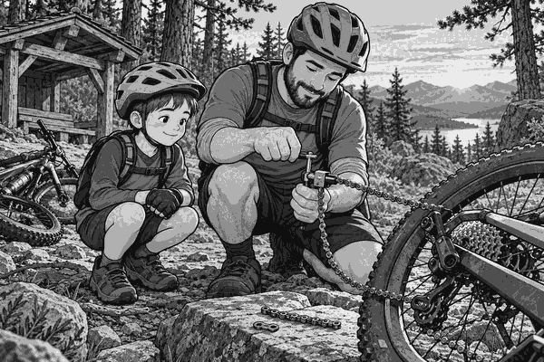

FICTION
Tom and Dad pushed their bikes to the start of Eagle Trail.
The trail climbed through a dark pine forest.
At the top was a wooden lookout.
They wanted to reach it before the sun went down.
Tom put on his helmet.
Dad checked both bikes.
Tyres firm. Brakes working. Water packed.
Then they began to ride.
The first hill was long and stony.
Tom changed to an easier gear.
His feet spun faster, but pushing the pedals felt easier.
Near the top, the trail became steep.
Tom stood on the pedals.
CLUNK!
The pedals suddenly spun with no push.
Tom stopped and looked down.
His chain lay on the ground.
One small link had broken.
“That sounds like the end of our ride,” said Tom.
Dad smiled and opened his tool bag.
“It is the start of a repair challenge.”
They moved both bikes away from the trail.
Dad used a chain tool to remove the damaged link.
The little tool pushed out a metal pin.
Then he took out a spare quick link.
A quick link joins two ends of a chain.
Tom held the chain steady.
Dad fitted the two parts of the quick link together.
They turned the pedals by hand.
The chain moved around the gears again.
But Dad did not rush.
He checked every gear.
He also squeezed both brakes.
“A repair must be tested before we ride,” he said.
BIKE FACT
A bicycle chain is made from many short links. The links bend around the round gears. This lets your pedalling turn the back wheel.
Tom rode slowly at first.
The chain stayed smooth and quiet.
Soon they reached the last climb.
The sky was turning gold.
Tom used an easy gear and kept a steady pace.
At last, the wooden lookout appeared between the trees.
They reached the top just before sunset.
Far below, the forest looked like a green sea.
Tom took a drink and looked at his bike.
“The broken chain made the ride better,” he said.
Dad laughed.
“Only because we packed the right tool.”
They switched on their bike lights for the gentle ride back.
Tom had finished Eagle Trail.
He had also learned how a small link could save a big adventure.
Choose A or B. You can also answer the interactive questions from the dashboard Settings menu.
1. Why did Tom’s pedals spin without moving the bike?
A. The chain had broken. B. The tyres were too soft.
2. What did the quick link do?
A. Inflated the tyre. B. Joined the chain ends.
3. Why did Dad test the bike before Tom rode again?
A. To check it was safe to ride. B. To race Tom home.